00. 인트로 (1/2)
안녕하세요
신인호입니다.
그동안의 취향 몇 가지를 보여드리려고 합니다.
00. 인트로 (1/2)
그동안의 취향 몇 가지를 보여드리려고 합니다.
00. 인트로 (2/2)
과거의 취향부터 현재하고 있는 것들까지 간단히 소개하려고 합니다.
이어온 흔적들을 보며, 관심가는 취향을 찾아가는 시간이 되시면 좋겠습니다.
01. 글 (1/4)
카톡 상태 메시지
01. 글 (2/4)
아이패드를 사고 뭘 해볼까 고민하다가, 자연스럽게 글을 적게 되었습니다.
01. 글 (3/4)
요즘은 자주 쓰지는 않지만,
예전에 쓴 글을 보면 어떤 마음이었는지 볼 수 있어서 좋더라고요.
01. 글 (4/4)
거창한 글쓰기가 아니더라도,
가끔 적어두는 것만으로도 생각이 조금 정리되었습니다.
02. 그림 (1/4)
사실 예전에 직접 그려둔 그림입니다.
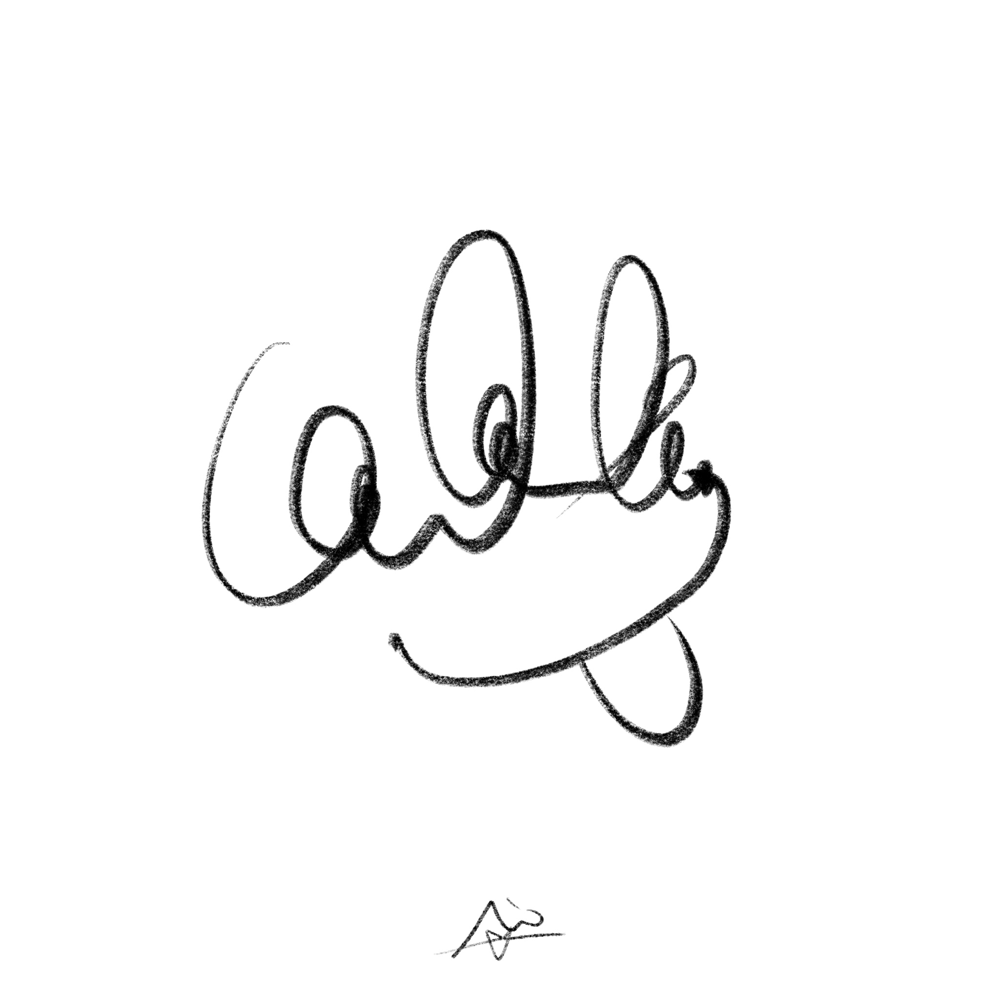
02. 그림 (2/4)
한동안 떠오르는 이미지들을 가볍게 그려두곤 했습니다.
여행지에서나 특별한 장소에서 느껴지는 분위기를 남기고 싶었어요.
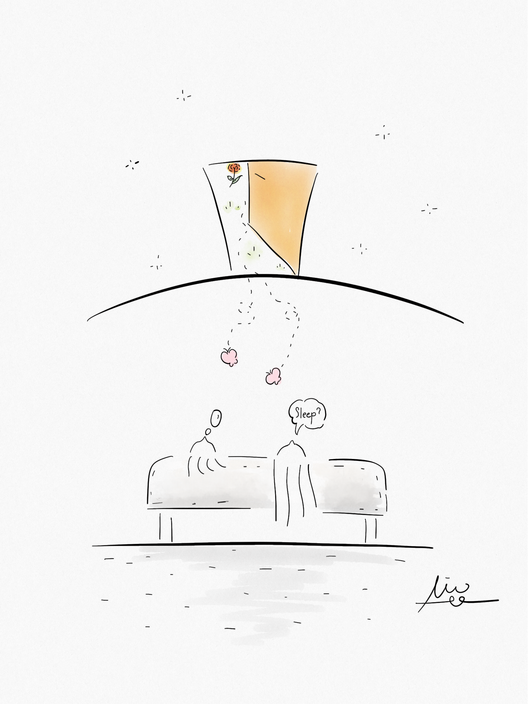
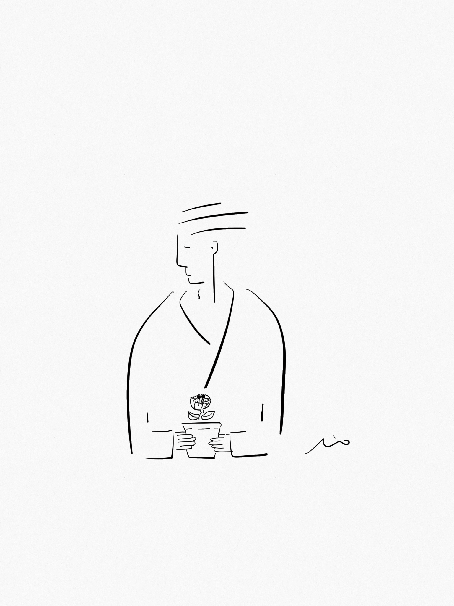
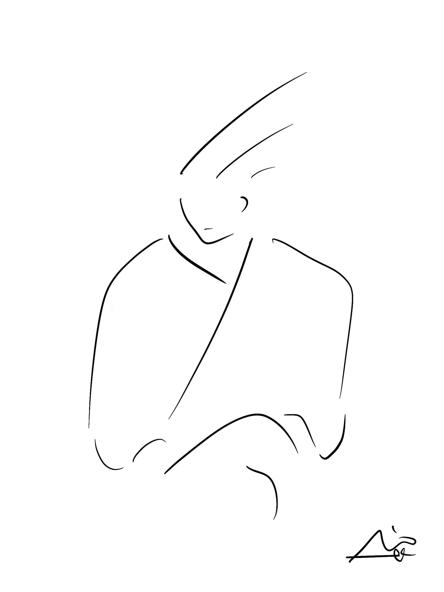
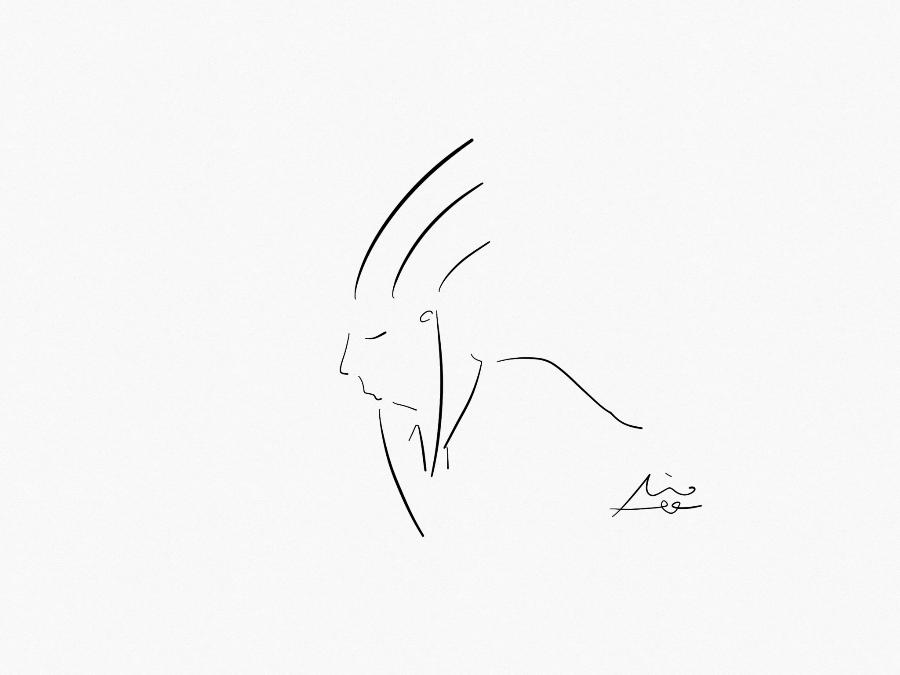
02. 그림 (3/4)
조금씩 그림을 그리다 보니,
어느새 슬랙에서 사용하는 이모지도 그리게 되었어요.
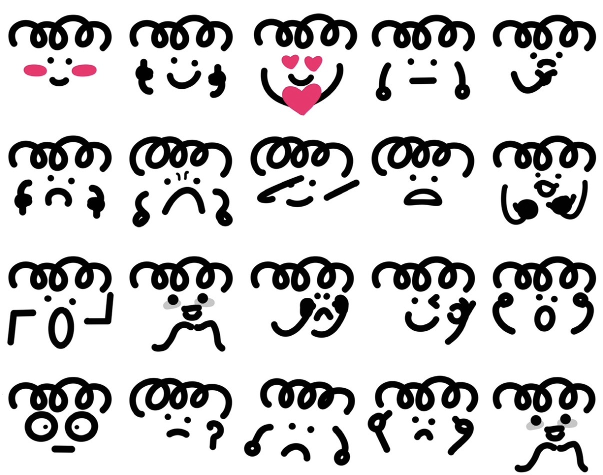
02. 그림 (4/4)
평소 스쳐가던 일상의 풍경과 사물들을
더 관심있게 바라보게 되었습니다.
03. 음악 (1/4)
네, 접니다.
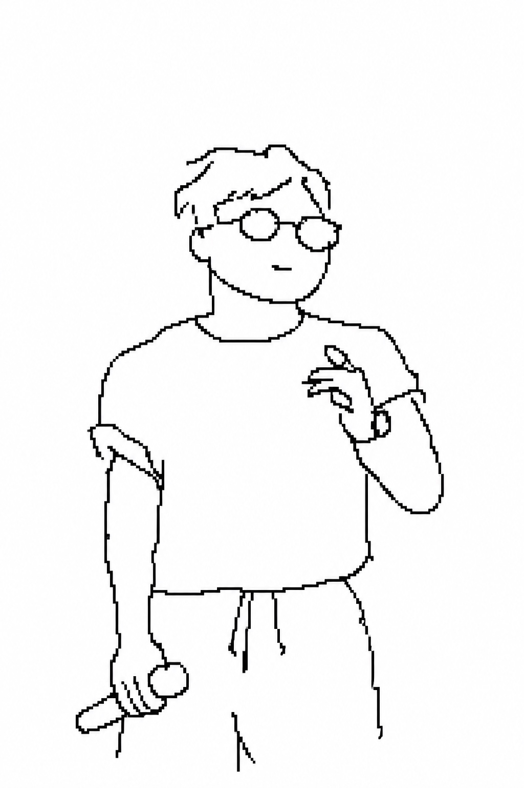
03. 음악 (2/4)
글이나 그림은 잔잔한 취향이라면, 이건 꽤 활동적인 편이에요.
03. 음악 (3/4)
공연이나 합주 사진을 보면,
그때의 감정이 새록새록 떠올라요.
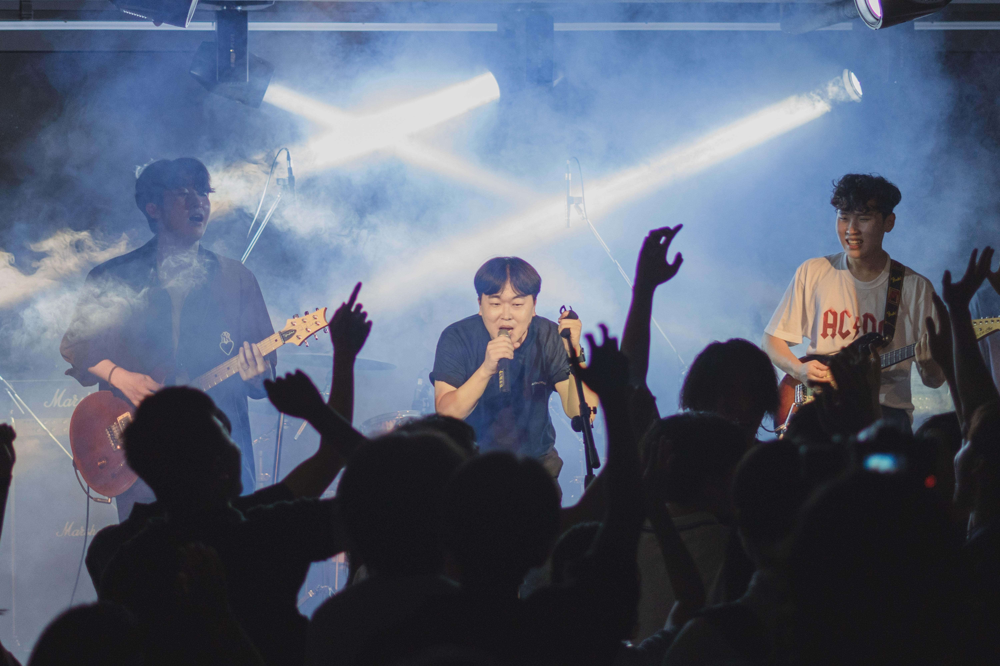
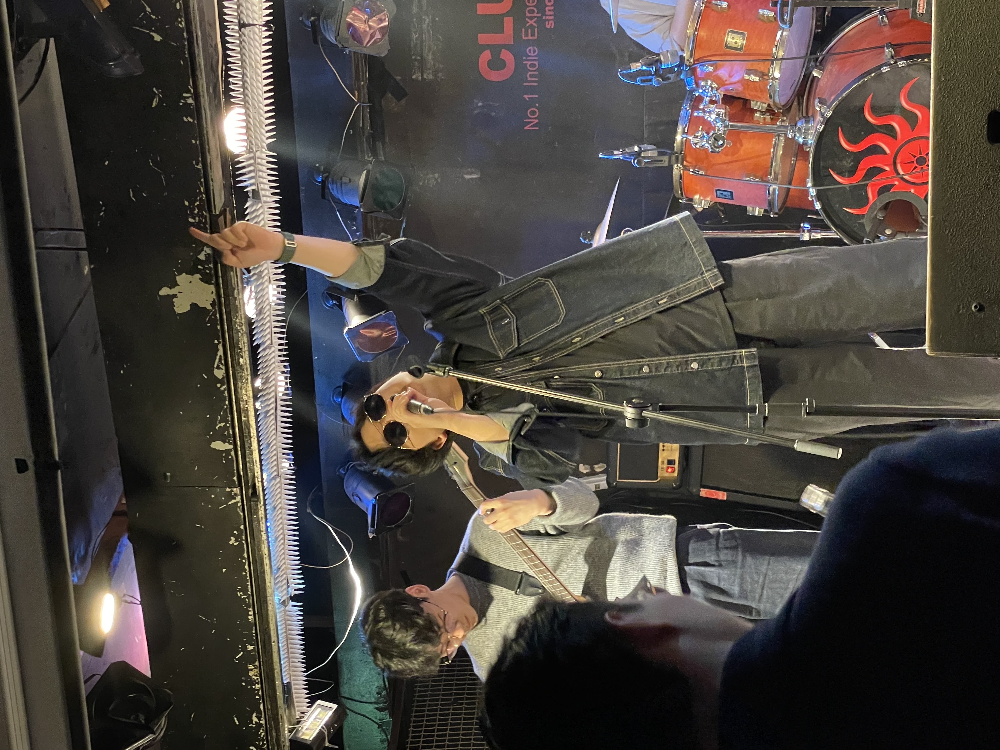
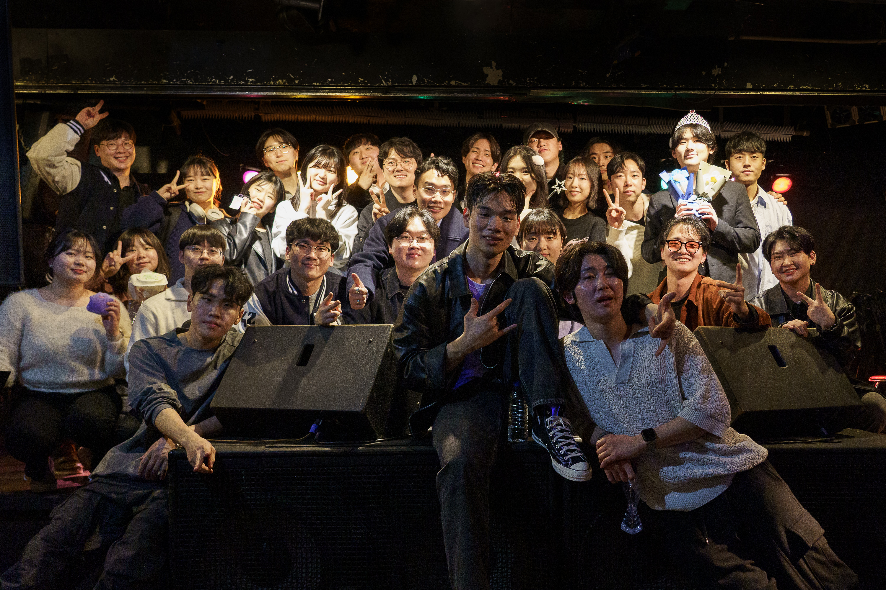
03. 음악 (4/4)
함께 맞춰가며 몰입하는 과정이 좋았어요.
04. 앱
최근에는 관심 있는 감각을 작게 완성해보는 방식으로 앱을 만들고 있습니다.
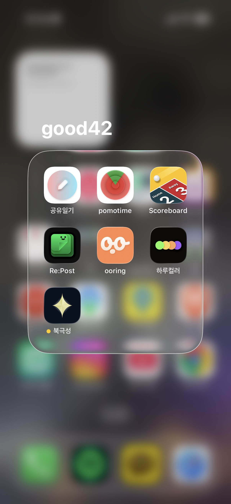
아래로 더 보기
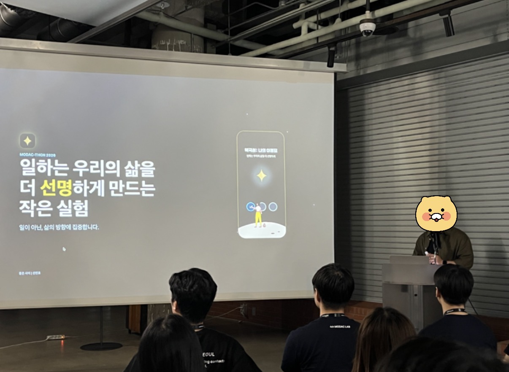
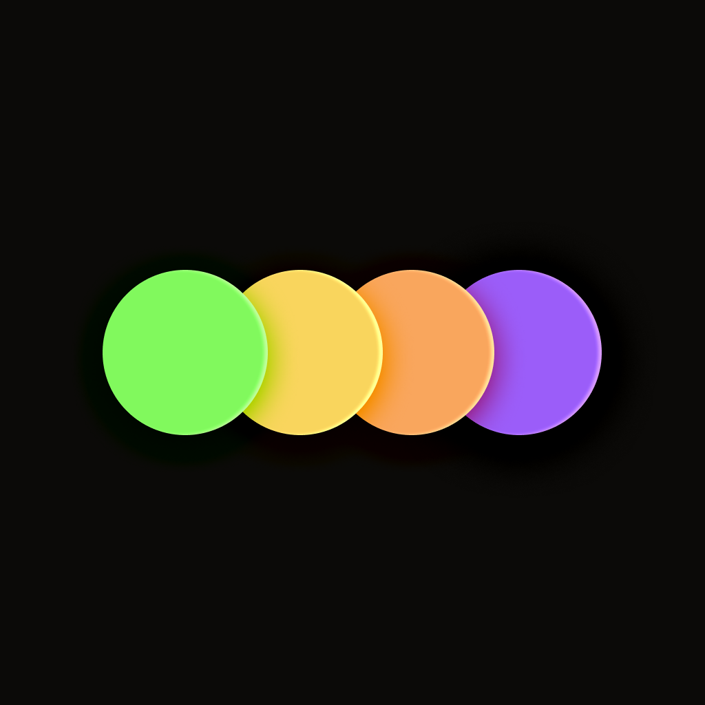
05. 마무리
오늘은 그중 몇 가지를 가져왔습니다. 다음에는 또 다른 형태로 남아 있을 것 같습니다.